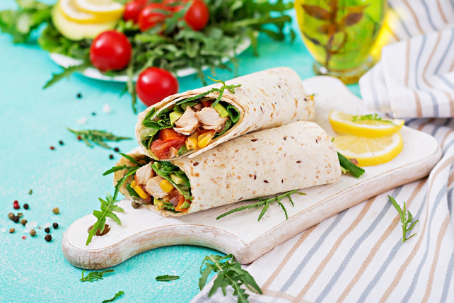

Csirkés Burrito
A burrito egy henger alakú tortillába csomagolt mexikói étel, amelyet általában rizzsel, hússal vagy babbal, valamint zöldségekkel, sajttal és szósszal töltenek. Az ínycsiklandozó kombinációja és könnyű elkészítése miatt a burrito az egyik legkedveltebb étel a világon.

Hozzávalók:
- 50dkg csirkemellfilé
- 2ek olívaolaj
- 4ek konzerv csemegekukorica
- 2db paradicsom
- 5dkg rukola vagy salátakeverék
- 1db avokádó
- 4db búzatortilla
Elkészítés:
- A csirkemellet megmossuk, vékony csíkokra vágjuk. Kissé megsózzuk, majd aranyszínűre pirítjuk a felforrósított olajon.
- A kukoricát szűrőbe téve leöblítjük, és jól lecsepegtetjük. A paradicsomot és a salátát megmossuk, a paradicsomot cikkekre vágjuk, a salátát falatnyi darabokra tépkedjük. Az avokádót félbevágjuk, eltávolítjuk a magját, a húsát pedig felkockázzuk. A tortillákat forró grillserpenyőben szárazon megpirítjuk.
- Elrendezzük az előkészített alapanyagokat a tortillák középső részén egy csíkban, majd feltekerjük mindet.